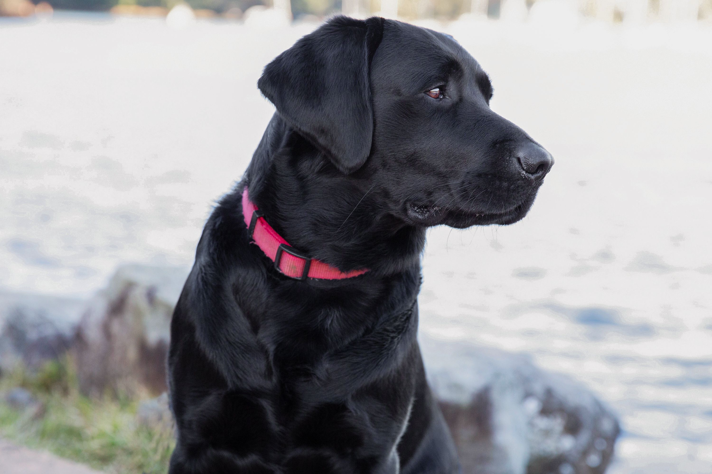
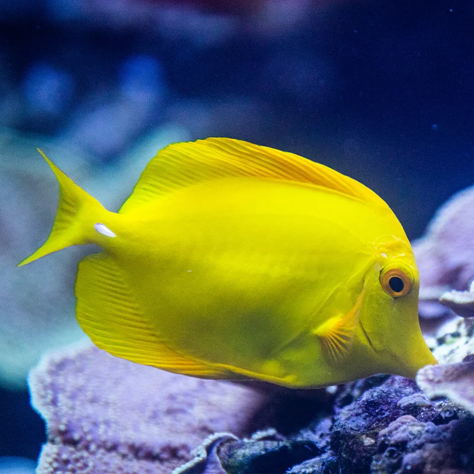
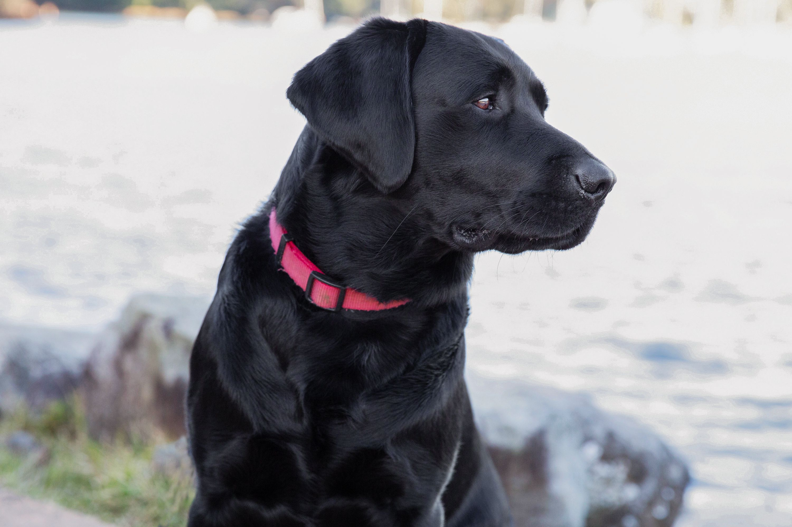
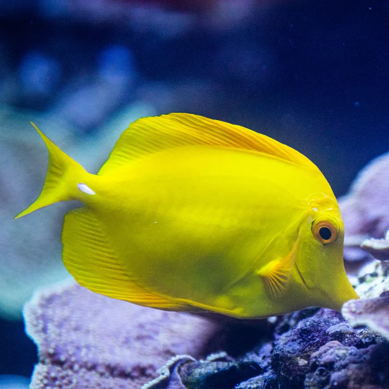

Pets

 



Bacon Q Dog
Bacon Q. Dog is a 9yr old labradoodle. He prefers to spend his days lounging among the three different beds/couches that his family has gifted him. He enjoys a walk or two around the neighborhood, as long as he can pretend that he doesn't see any of the other animals to avoid the embarrassment of not wanting to admit he has no wolf-like skills in chasing them.
At night just as the rest of the family is ready to relax, Bacon suddenly wants to release all of his energy. He will place his toys on a mini couch and frantically drag the couch around, giving his toys "a ride." There is also a lot of rolling. Lots and lots of rolling.
Photo Gallery


Likes
- Belly rubs
- Playing tug-of-war
- Sneaking onto the couch
Oliver
Oliver is a 2 year old Black Lab.
At night he likes to watch tv with the family and fall asleep with mom and dad.
Likes
- Playing fetch
- Eating Treats
- Taking a nap
Walter
Walter is a 5 year old fish that we got when we purchased the tank. Walter is the oldest fish in our tank and gets along well with the other fish
At night, Walter likes to go into the ship. He considers the ship his home, but shares with the other fish during the day